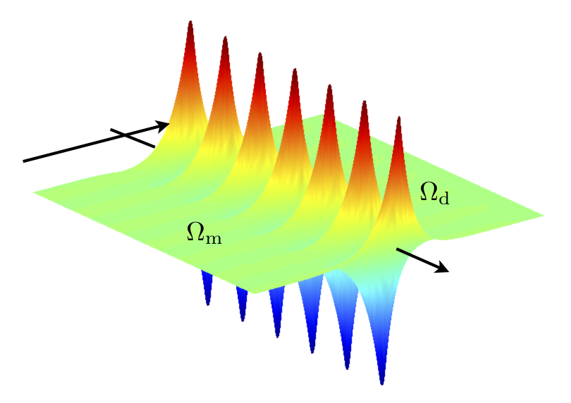
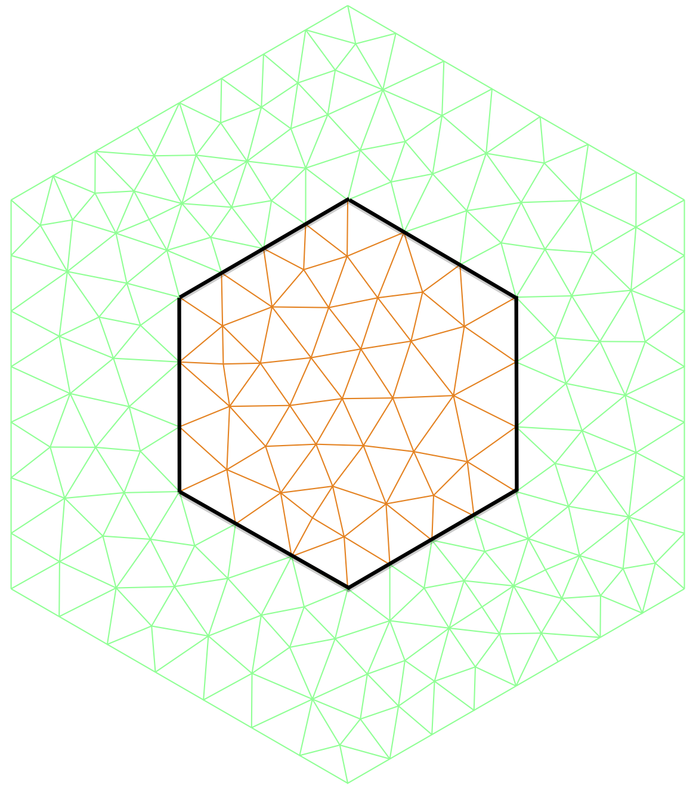
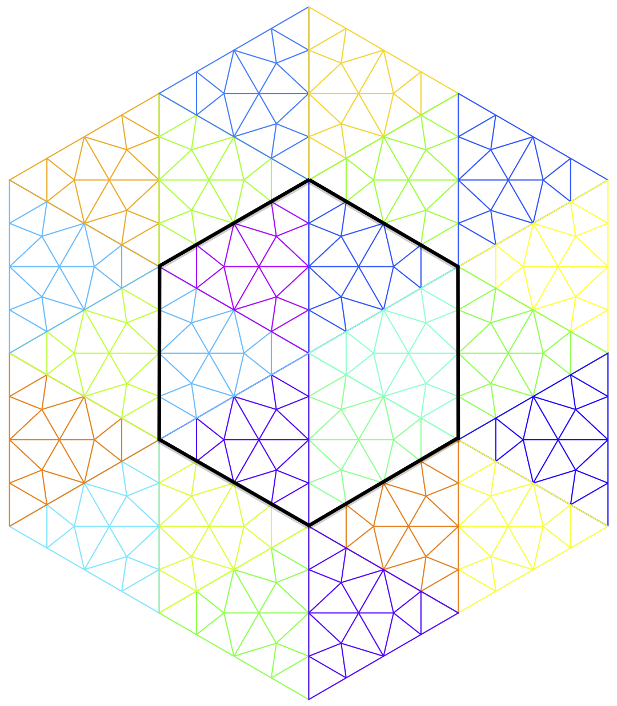

Finite Element Method for problems in plasmonic structures
Plasmonic structures
are made of a positive material (dielectrics) and and a negative meterial (metals at optical frequencies, metamaterials). Surface electromagnetic waves called surface plasmons can appear at the interface.

Applications:
Guiding and confining such particular waves in nanophotonic devices reveal a great interest to overcome the diffraction limit, in nanophotonic sensing and related applications.
Challenges:
Multiple scales
Surface plasmons are very sensitive to the geometry (corners)
Inaccurate predictions of the near field
Hyper-oscillating singularities, called back-holes waves, appear at the corners
Standard FEM fail due to spurious reflexions
Novel numerical method using FEM:
Mesh requirements to ensure FEM optimal convergence via the T-coercivity


An hexagonal cavity with an hexagonal negative material inclusion. Left: standard mesh. Right: T-conforming mesh
Use of Perfectly Matched Layers at the corners to capture the black-hole waves
Scattering problem by a plane wave of a metallic inclusion. Left: standard FEM, spurious reflxions at the corners (steady wave). Right: multi-scale method, the plasmons propagates towards the corners.
References
Mesh requirements for the finite element approximation of problems with sign-changing coefficients, A.-S. Bonnet-Ben Dhia, C. Carvalho, P. Ciarlet Jr., Numerische Mathematik, pp 1-38, 2018.
Eigenvalue problems with sign-changing coefficients, C. Carvalho, L. Chesnel, P. Ciarlet Jr., Compte Rendus Mathématiques, 355 (6), pp 671-675, 2017.
On the use of Perfectly Matched Layers at corners for scattering problems with sign-changing coefficients, A.-S. Bonnet-Ben Dhia, C. Carvalho, L. Chesnel, P. Ciarlet Jr., Journal of Computational Physics, 322, pp 224-247, 2016.
Ongoing projects:
T-conforming mesh generator
Limiting Amplitude Principle
Design by FullAhead. Valid CSS & XHTML with no rights reserved.